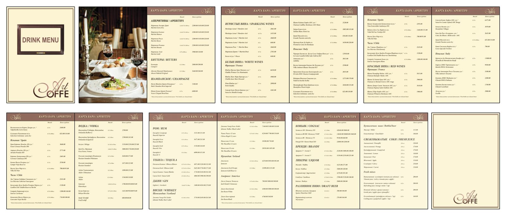
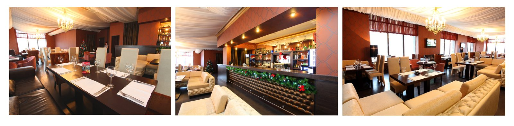

← All work
Restaurant
Art Café
Menus, brochures and advertising concepts for a restaurant, designed to feel warm and elegant while keeping a large menu easy to read.
- Role
- Brand and print design
- Deliverables
- Food menu, drinks menu, brochures, flyers, interior photography
- Tools
- Illustrator, InDesign, Photoshop


